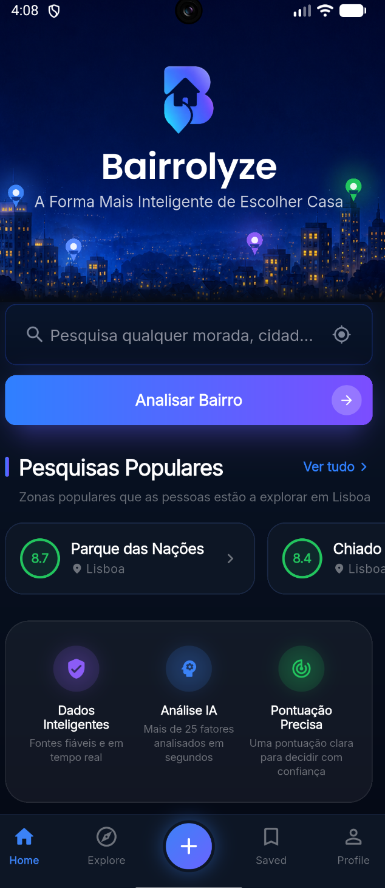
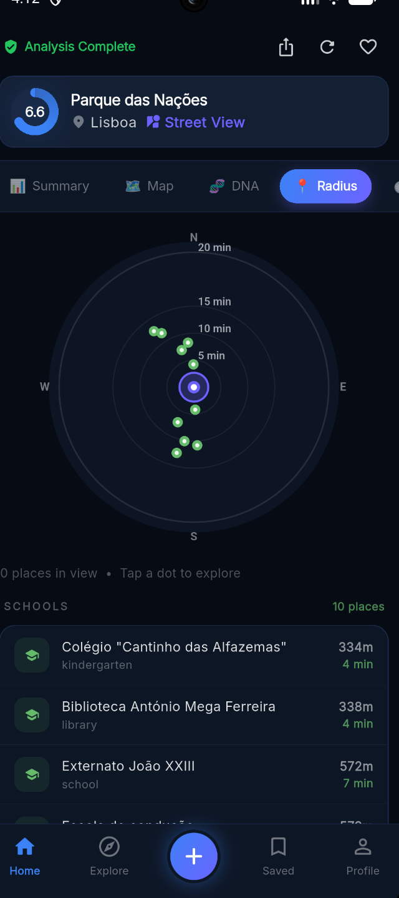
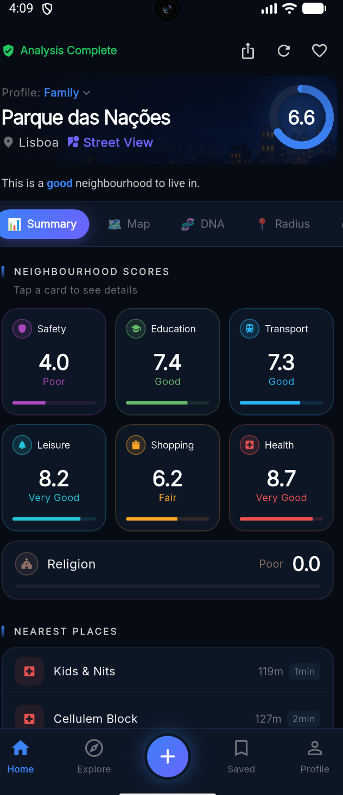
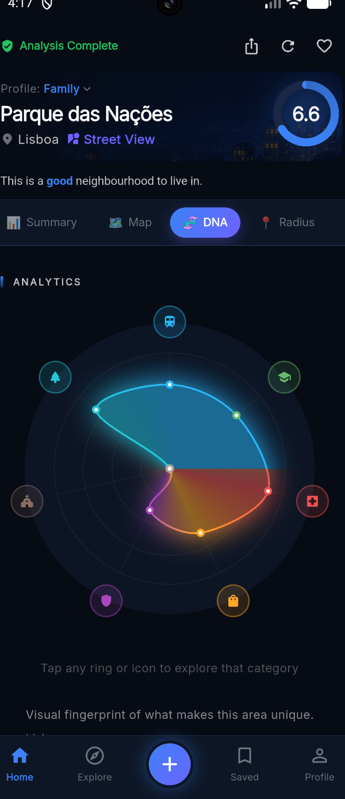
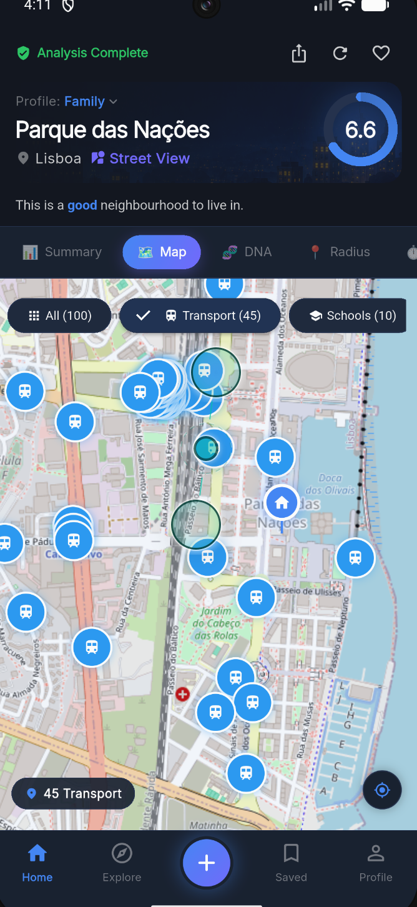
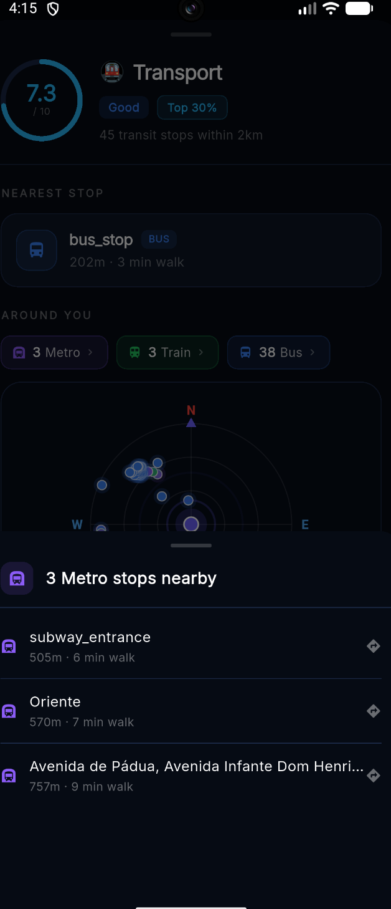
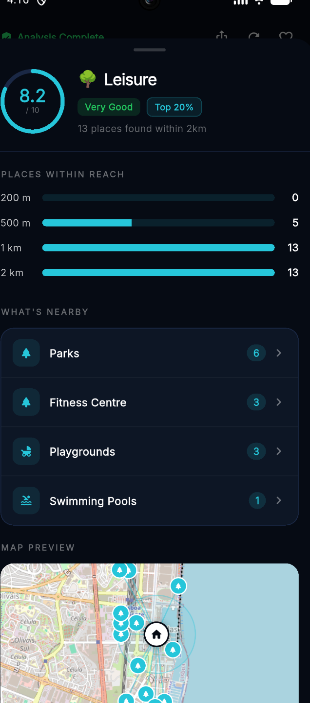

A home can look perfect in the listing photos. The street around it is much harder to judge. Bairrolyze scores any address in Portugal on the things that shape everyday life, from safety and schools to transport and leisure, using live map data.
Free to try · No account needed · Portugal-first, expanding across Europe



Most people decide on gut feeling, out-of-date statistics and a handful of strangers' opinions online. Sound familiar?
“I'm relocating to Portugal and trying to gather as much as I can before deciding. Numbeo lists a crime index of 51, but that's based on just 4 contributors over 5 years. Locals say some parts aren't safe at night. Which neighbourhoods should I avoid?”
Bairrolyze scores any address on safety and six other categories from live map data, then opens Street View so you can see the actual street before you visit. Set a minimum score and spend your time only on the places that clear it.
Bairrolyze gathers what surrounds an address, from schools and hospitals to transport and parks, and brings it together into something you can actually decide with.
Everything nearby, from shops to clinics, plotted on one map.
Transport, safety, health, schools, leisure, shopping and more.
Metro, train and bus stops with real distances, from OpenStreetMap.
Re-weighted for a family, student, professional, retiree or investor.
A short, readable take on what everyday life there is like.
See the actual street around an address before you visit.
Every address gets a rating out of 10, tuned to who you are, whether that's a family, a student, a professional, someone retiring or an investor. Underneath it sit seven category scores you can open one by one.



Transport data comes live from OpenStreetMap: the actual stops around an address, sorted by metro, train and bus, each with a real walking time and distance. No vague promise of “good transport links”.

Every place, distance and detail sits in a single view, so you can read the area instead of piecing it together across a dozen browser tabs.
Straight-line distance flatters a listing. Bairrolyze shows the real walk to each place and what falls inside a 5, 10 or 20 minute radius, so “nearby” actually means something.
A street, a neighbourhood or a whole city, anywhere in Portugal. You don't need to know the area first.
Bairrolyze checks the schools, transport, healthcare, parks, shops and safety nearby, using live map data.
A rating out of 10, a breakdown by category, a short written summary and every place on the map.
Each one is weighted differently depending on the profile you choose, so the score reflects your priorities, not someone else's.
Bairrolyze is free to try, with no account to set up.